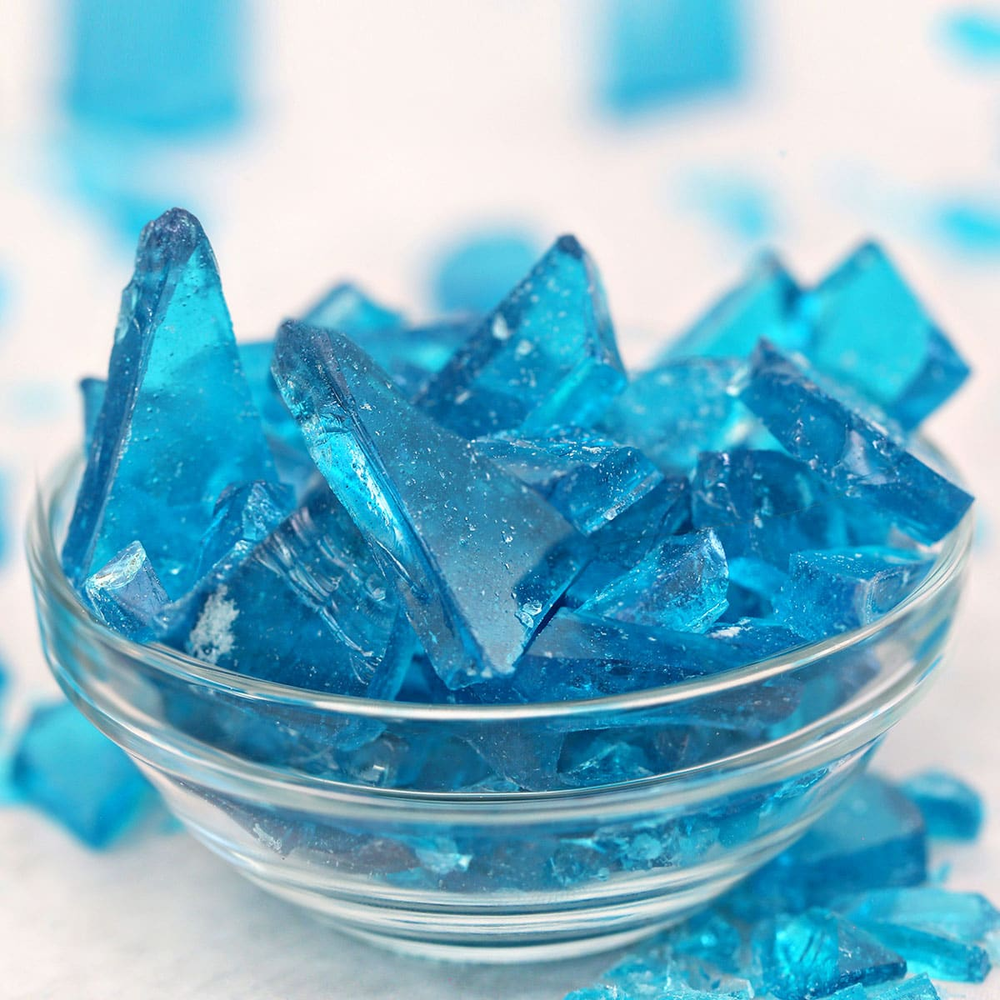

Homepage
METHAMPHETAMINE

Ingredients
* 2 cups granulated sugar (plus extra to coat)
* 1 cup water
* Food coloring (optional)
* Flavoring (optional — e.g., ½ tsp vanilla or peppermint)
* Wooden skewers, clean strings, or cotton thread
* Glass jars or heatproof glasses
* Clothespins or pencil to suspend skewers
Steps
1. Prepare the sticks: Wet wooden skewers and roll them in granulated sugar, then let them dry completely. This
seeded sugar helps crystals start forming.
2. Make a saturated sugar solution: In a saucepan, heat 1 cup water to a simmer. Gradually add sugar, stirring
constantly, until it dissolves. Continue adding sugar until no more dissolves and the solution is clearly
supersaturated (you’ll use about 2 cups sugar total). Remove from heat.
3. (Optional) Add a few drops of food coloring and flavoring, stirring gently.
4. Pour the hot sugar solution into clean jars. Leave some space at the top to avoid overflow when crystals grow.
5. Suspend the prepared skewer in the center of the jar so it doesn’t touch the sides or bottom. Use a clothespin or
pencil across the jar mouth to hold it.
6. Cover the jar with a paper towel or coffee filter to keep dust out, but allow evaporation.
7. Place jars somewhere undisturbed at room temperature. Crystals should start forming in 24–48 hours and grow over
several days. Let them reach the desired size (3–7 days is common).
8. Remove skewers, let excess liquid drip off, then let candies dry on wax paper for an hour or two.
9. Store in an airtight container.
Tips
* Warmer, slower evaporation tends to produce larger, clearer crystals.
* If crystals form on the jar walls instead of the skewer, reheat and filter the solution and try again with a
better-seeded skewer.
* For a stronger seed, dip the skewer in the supersaturated solution briefly before rolling in sugar.